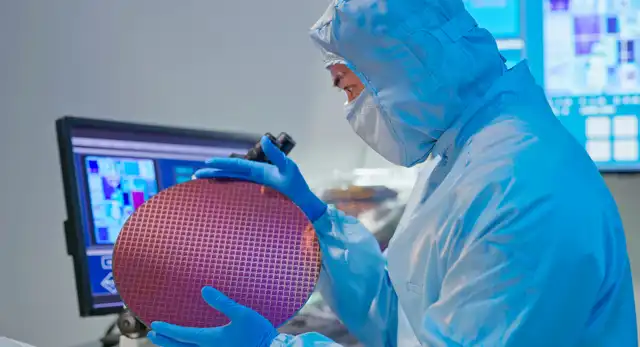
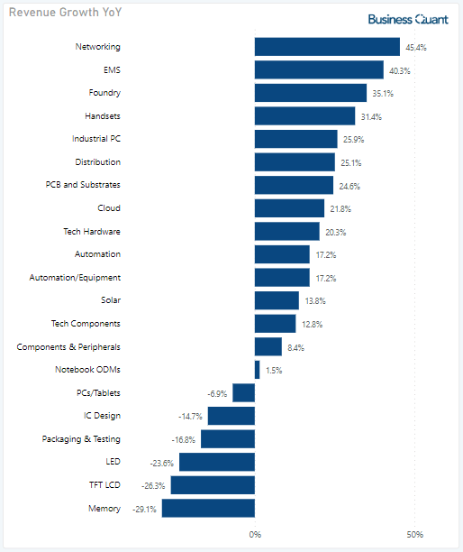

Nvidia: This Could Get Ugly
Oct. 25, 2022 1:00 PM NVIDIA Corporation (NVDA) Link

NVIDIA Corporation’s (NASDAQ:(
NVDA
) shares are down
nearly 60% year to date, and many hopeful investors
believe the stock is forming a bottom. Where some
feel the chipmaker will post a strong set of
quarterly results to drive its shares higher,
others are of the opinion that the stock is
undervalued and is due for a major rally. But
that doesn’t seem to be the ground reality.
Latest channel sales data reveals that Nvidia’s
Q3CY22 is shaping up to be an ugly quarter,
which means its shares can potentially fall
further in coming weeks and months. In this
article, I'll attempt to explain why this
might not yet be the best time for bottom
fishing. Let's take a closer look at it all.
Monthy Sales Data
I’d like to start by saying that Nvidia is practically a chip designer today. Its engineers design chip circuitry, which are sent to Taiwan Semiconductors or Samsung for fabrication on actual silicon wafers. Then, these chips are packaged and assembled in the form of usable products and later distributed to end-markets by Nvidia’s board partners such as Gigabyte, ASRock and Micro Star International. Some of these companies also manufacture and distribute computing peripherals around Nvidia’s ecosystem of products. With so many channel partners involved, we can monitor their monthly sales data and get an idea of how Nvidia’s ongoing quarter is shaping out to be.
We, at Business Quant, have developed a tool to serve exactly this purpose. It tracks and monitors monthly sales data for over 1200 Taiwanese suppliers, so we can get insights about the state of supply chains across different industries. Note in the chart below that sales of Gigabyte, Micro Star International, Biostar Microtech and Tul Corporation shrank significantly from July through September. These firms manufacture Nvidia-branded GPUs, motherboards and/or other computing peripherals. Also note that for a few companies, the sales decline accelerated in September. This suggests that financials for Nvidia’s channel partners are deteriorating quickly.
If Nvidia’s SKUs were selling like hotcakes and preserving their average selling prices (or ASPs), then its channel partners would have seen their sales grow or at least plateau for the time being. But sales decline to the tune of 30% to 80% across channel partners suggests that Nvidia is struggling to sell its SKUs for the time being at least. This signals weak consumer demand muted consumer spending power, despite plummeting GPU prices.
It’s evident from the table above that Taiwan Semiconductor (TSM), which is a fabrication partner for the chipmaker, registered elevated sales growth during September on a year-on-year basis. This is counterintuitive – if chip designers and their channel partners are struggling to make sales, then how can a chip fabrication company thrive at the same time?
There’s one probable explanation for this – chip designers such as Advanced Micro Devices (AMD), Nvidia, and Qualcomm (QCOM) are yet to cancel their orders with Taiwan Semiconductors. We’ve already heard rumors of AMD planning to cut production in light of slowing consumer demand but there hasn’t been an official confirmation on this. But this data suggests that chip designers like Nvidia and AMD will have to cut production in order to avoid inventory build-up.
To have a better understanding of the situation, I pulled the industry-wise sales numbers for September. As it turns out, sales are down for computing and some of the other closely associated industries, but still up for others. So, it seems the slowdown is either limited or not yet proliferated to the broad swath of other industries.

But this begs the question – what does it all mean for Nvidia’s shareholders?
Impact for Investors
I’d like to clarify that most of the companies mentioned in the table above, have diversified product portfolios and have non-exclusive manufacturing arrangements with Nvidia. For instance, Gigabyte, MSI and ASRock, manufacture GPUs, motherboards and other computing peripherals for Nvidia as well as its competitors, that is, Intel (INTC) and AMD. So, we have to take note that these monthly sales figures are indicative of the state of personal computing industry sell throughs, rather than specifically being limited to Nvidia’s ecosystem of products.
But having said that, if Nvidia, AMD and Intel, in general, had a strong sales momentum, then these partner firms would have also reported strong sales figures. Their sales slump only shows that Nvidia and its peers are going through a sales downturn and investors need to brace for impact in the upcoming earnings season. AMD has already reported weak preliminary Q3 results, and I contend that Nvidia and Intel will follow suit in the coming days.
Although Nvidia has released its next-generation RTX 4090 GPU, I don’t think one SKU alone will make much of a difference on the company’s overall financials and its blended ASPs. It would have to release more SKUs in the coming months under its RTX 40-series banner, whilst carefully depleting its RTX 30-series channel inventory, to be able to tackle this sales slump. So, I believe that Nvidia is set for a quarter or two of sales slowdown at least.
There is one way where the company might be able to trump this sales slump quickly -- bear in mind that this is pure speculation on my part. Last month, U.S. regulators imposed an export ban on Nvidia and AMD-branded datacenter GPUs to Chinese customers. The affected Chinese datacenter clients must be frantic and would be looking to stock up on these enterprise-grade GPUs before the ban comes into full effect. If Nvidia can prioritize production of its datacenter GPUs on a short notice (like it’s being rumored here) then it might very well be able to sell volume quantities to desperate customers at a premium, and stabilize its sales along the way.
Intel Was Obliterated
Oct. 27, 2022 5:00 PM ETIntel Corporation (INTC) | link
Intel was priced as if it was going out of business, but the company is not losing money, and saw an influx of cash from Mobileye.
The company needs to rein in costs, and it appears a concerted effort may be underway and the Street is initially happy about this.
Intel earnings for Q3 were not great, and the stock is not reacting favorably.
The Intel dividend will be preserved as long as it can, and for now, it appears safe.
This idea was discussed in more depth with members of my private investing community, BAD BEAT Investing.

Well, the market has begun to rebound the last few weeks, and Intel Corporation (NASDAQ:INTC) saw its stock rise a bit with this rally. We know that the company just had its Mobileye Global Inc. (MBLY) IPO, which priced above range. Much of the proceeds (nearly $1 billion) will be used for repayment to Intel, so that is some nice cash coming in. The company needs the working capital. The listing also helps get the self-driving unit public attention.
That said, Intel stock has been left for dead by the Street, and is teetering just above levels not seen in 8 years. However, after the just-reported earnings, shares are largely positive on the initial reactions. The stock and company were obliterated, but there are signs of life after this report.
Semiconductor stocks as a whole have been absolutely decimated, and this report is another dagger in the hearts of shareholders. The report suggests demand is slowing, and there has been a global fear that there will be a very slow period for new computers, televisions, cars, and just about all the other products that uses semiconductors.
When Intel hit its lows under $25 a few weeks ago, we started buying, with a plan to scale in. In this column, we update our readers with our interpretation of the just-reported earnings. Even with some of the revelations in this quarter, we still believe that under $25, it is time to scale into Intel. Let us discuss.
Intel's Q3 earnings highlight a dire but possibly improving situation
Make no mistake, Intel is not going bust. But it is not good either right now. We will say there are safer semiconductor bets out there, although the entire sector is out of favor. But with this report, the headlines were really tough to swallow. Even with such weak headlines, the yield on the stock is close to 5.5%, and so we are still buyers. It does call into question the dividend safety but we think that management will keep the dividend party going as long as possible as a cut would send shares to levels not seen in decades. It would obliterate shares further, after already being obliterated.
There are a lot of fundamental challenges the company faces. The market has priced in a lot of pain, but once again the Q3 earnings release documented an ongoing weakening environment that CEO Patrick Gelsinger highlighted the need for addressing costs:
"To position ourselves for this business cycle, we are aggressively addressing costs and driving efficiencies across the business"
David Zinsner, Intel CFO added:
[W]e are focused on embracing an internal foundry model to allow our manufacturing group and business units to be more agile, make better decisions and establish a leadership cost structure.... We remain committed to the strategy and long-term financial model communicated at our Investor Meeting
This was pretty clear as day. Take a look at the results here, folks, the year-over-year comps are just painful. This is why the stock is being obliterated:
Earlier this year, the company guided for revenue of $15-$16 billion, on 46.5% margins, and was looking for EPS of $0.35 in the quarter. Well, the company whiffed here on some metrics, but exceeded in others.
So, as you can see, revenue was down 20% from a year ago, or 15% when adjusted for currency. Margins narrowed again as well and missed the company's own targets. Revenue was mostly in-line. Operating margins were down. And yet, the company is spending MORE on research and general expenses. Unacceptable. Net income was down 85% from last year, or 59% when adjusted. Terrible. Earnings were just painful, down the same 85% to $0.25 on a GAAP basis per share in Q3, though they came in at $0.59 per share adjusted and actually beat estimates.
So, what now?
Looking ahead
Even with the destruction of shareholders, from where we are now, the valuation, even with the declines, is still pretty attractive. There remain very favorable P/E, PEG, EV/sales, EV/EBITDA, and price-to-cash flow metrics. But as we all know when investing for dividend income, cheap can certainly get cheaper. The dividend is still juicy. Growth is nonexistent. But let us not be dramatic here folks. Conditions have deteriorated for everyone in the sector. Intel is, however, being outcompeted, which has compounded the issues. But the business simply is NOT dying. The company is not losing money. Some influx of cash from MBLY is a benefit, though. But what the company absolutely must do is to get spending under control.
The pricing of chips has been on the decline. This will continue to weigh on earnings the next few quarters until there is a sizable turnaround. Demand is waning, despite there being more sources of demand. What once was a lack of supply is now seemingly an oversupply risk for chips, although some industries are still seeing shortages. While chips are used in everything and hence are much more secular than in years past, they are still quite cyclical, and we are on the downtrend of the cycle. Keep that in mind.
It seems that the company is taking steps to rein in costs, however. It looks like there are going to be job cuts at Intel now. While this was reported earlier this month by Bloomberg, this report did not actually confirms that the 114,000-employee base is going to get cut. The release does say $3 billion in cost reductions are on the table. These cuts will help save money.
We are still very excited about the move to implement an internal foundry model for its customers, as well as its own chips. At least we think we are. On the surface, this should be something that should be a long-term victory for the company. However, it is actually not exactly clear what this internal foundry will do for the company or how much money it will save or how it will make the company more efficient. On the surface, of course, it suggests Intel will now become an internal customer of its other business lines, notably of its own fabs. More details could be coming out in the coming days or on the conference call.
Q4 outlook
After this report, we have to be concerned with how Q4 numbers will look.
For Q4, the company has now guided for revenue of $14-$15 billion, on 45% adjusted margins. They are targeting EPS of just $0.20 in the quarter adjusted. That is kind of painful. In addition, they are going to burn about $2-$4 billion in adjusted free cash flow for the year. That hurts.
With the way things have been going, this may be a kitchen-sink estimate that the company can easily hit. But the pain has been real. We really need to see spending cuts, and serious work to recapture market share. If the company cannot turn things around margin-wise and especially on operation margins, then the bountiful dividend could seriously be in jeopardy. There is a long line of dividend payments and increases here. Just look at the last 10 years:
We fully believe management will do all it can to keep that dividend intact, but if the numbers are not there, they will have no choice but to eventually cut the dividend. The market could even react very poorly if they do not hike the dividend. But for solvency's sake, if this downturn lasts years, it could have little choice. Near-term, it should be ok provided this earnings downturn only lasts a couple of quarters. In other words, the dividend should be secure. Seeking Alpha still assigns a slightly above average safety rating to the dividend. There are some risk signs, like increasing payout ratio metrics relative to cash flow, and the cash per share on hand.
Final thoughts
Intel is not going out of business, though it is being priced as if it is in a lot of risk of debt default, bankruptcy, and more. We just do not think this is reality. The company is taking steps to improve its fiscal state, including using a foundry model and cutting staff. We want to see the company get serious about its spending. The dividend is secure in our opinion, for now. The sector is cyclical despite ongoing secular demand.
Despite the weak performance, we still like adding Intel stock to our personal long-term dividend growth portfolios as the stock falls under $25. Right now, shares are getting a small boost on this report, but the outlook was not great. The Street (as do we) likes the cost cutting measures Intel laid out.